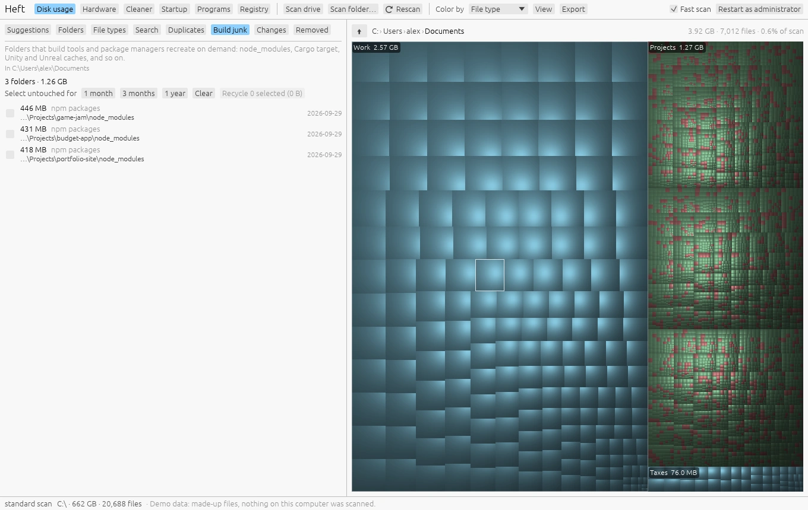

Cleaning up safely
Windows · macOS · LinuxHeft points out what you probably don't need, tells you why, and makes sure you know what you're deleting before it goes.
Suggestions

The Suggestions tab reads the scan and lists things that are usually safe to remove, largest first. Each one says how much space it frees and why it's on the list. Click any item to see it in the map.
| Suggestion | What it finds | Ticked for you |
|---|---|---|
| Old installers in Downloads | Setup files for programs you've probably already installed. | Yes |
| Repeated downloads | Files like report (1).pdf that are the same size as a file with the original name. | Yes |
| Build folders in inactive projects | node_modules, build output and caches in projects you haven't changed in six months. | Yes |
| Very large log files | Logs are only needed when troubleshooting. | Yes |
| Crash dumps | Snapshots saved when a program crashed. | Yes |
| Big files untouched for two years | Large videos, disk images and archives that haven't changed in over two years. | No |
| Steam games you haven't played in a year | Heft reads Steam's small library files to learn when each game was last played. Each game has an Uninstall in Steam button, so Steam stays in charge of its library. | n/a |
| Temporary files and caches | What the Cleaner would remove. Opens the Cleaner page. | n/a |
| A full Recycle Bin or Trash | Deleted files keep using space until the bin is emptied. | n/a |
| Large virtual disks | WSL, Docker and virtual machine disks that grow but don't shrink by themselves. | n/a |
| Previous Windows installation | A Windows.old folder left by an upgrade. | n/a |
| Hibernation file | The space Windows reserves for hibernation and Fast Startup. | n/a |
| Old macOS installers | Full macOS installers left in Applications after an upgrade, or downloaded to make a startup disk. You can download them again from Apple. | No |
| iPhone and iPad software downloads | Copies of iOS and iPadOS that Finder downloaded to update or restore a device. Finder downloads a fresh one when it needs it. | Yes |
| iPhone and iPad backups | Finder's backups of every device you've backed up to this Mac, including ones you no longer have. | n/a |
| Time Machine snapshots on this disk | Hourly snapshots Time Machine keeps on the Mac itself. The space they take doesn't show up in a scan. | n/a |
| Hibernation image | The file macOS writes memory to when a laptop sleeps, so your work survives a flat battery. | n/a |
| Docker Desktop's disk | The one file where Docker Desktop on a Mac keeps every image, container and volume. | n/a |
| Messages attachments | Every photo, video and file sent or received in Messages on a Mac. | n/a |
| Xcode archives | Builds archived in Xcode to upload or share, with their debug symbols. | n/a |
| Mail downloads | Copies of attachments opened from Mail on a Mac. | n/a |
| Photos library | The full-size originals Photos keeps on a Mac, and how Optimize Mac Storage keeps them in iCloud instead. | n/a |
| Big iCloud Drive files kept on this Mac | Files that are also in iCloud and haven't changed in a month. Removing the download frees the space without deleting them. | No |
| Programs, apps and games you haven't updated in three months | Folders that could be compressed in place (NTFS on Windows, APFS on a Mac). | n/a |
Suggestions marked n/a aren't things Heft sends to the Recycle Bin or Trash. They explain what to do and, where there's a right tool for the job, point you to it: Steam for games, Disk Cleanup for Windows.old, powercfg /hibernate off for the hibernation file, or the Cleaner page for caches and virtual disks. On a Mac: Finder's Manage Backups for iPhone and iPad backups, Docker itself for Docker Desktop's disk, pmset for the hibernation image on a Mac that's always plugged in, Storage settings or Messages' own setting for Messages attachments, Xcode's Organizer for archives, Mail's setting for its downloads, and Optimize Mac Storage for the Photos library. Time Machine removes its local snapshots by itself, so they rarely need attention.
Anything Heft considers dangerous to delete never appears as a suggestion, and nothing that comes with a warning is ever ticked for you.
Build junk


Developers collect folders that build tools and package managers can recreate on demand. The Build junk tab finds them:
node_modulesand JavaScript build caches (.next,.nuxt,.vite,.turbo,.svelte-kit,.angular,.parcel-cache);- Rust
targetfolders and other caches marked with aCACHEDIR.TAGfile (pytest, mypy, ruff and others); - .NET
binandobj, Gradlebuildand.gradle, Python.toxand.nox; - Unity
Library, UnrealIntermediateandDerivedDataCache, Godot.godot.
A folder is listed only when the project around it confirms what it is: a package.json next to node_modules, a .uproject next to Intermediate, and so on. A folder that just happens to be called build or Library is never listed.
Use Select untouched for 1 month, 3 months or 1 year to tick only folders in projects you haven't worked on lately, then Recycle them. The next build brings back whatever a project needs.
What the warnings mean
Heft marks files and folders that are risky to delete with a triangle in the tree, and explains the risk in the treemap tooltip, the right-click menu and the delete dialog. There are two levels:
- Caution (yellow): deleting it might break an app or lose data. For example installed programs and apps, app settings and data, cloud-synced folders including iCloud Drive, mailboxes, Messages history, music libraries, iPhone backups, saved games, a Git repository's history, virtual disks, the hibernation file and Time Machine backups.
- Danger (red): deleting it might stop the computer from starting or working. For example Windows and macOS system folders, device drivers, startup files, a user profile or home folder, the user registry, keychains and whole drives.
Each warning says what could go wrong and what to do instead, such as using Disk Cleanup for the Windows folder or your package manager on Linux.
The warnings err on the side of caution. They never block you on their own; they make sure you see why something might be a bad idea.
Deleting

Right-click anything and choose Move to Recycle Bin (Trash on macOS and Linux), or select it and press Delete (Cmd+Backspace on a Mac). You can also delete in bulk from Suggestions, Search, Duplicates and Build junk.
The dialog always shows how many items, how much space and how many files are involved, and lists any warnings. For anything marked Danger you have to tick I understand this could break my system first.
Everything goes to the Recycle Bin or Trash. The space comes back when you empty it, which you can do from the desktop or with the Recycle Bin item on the Cleaner page.
Putting things back
The Removed tab lists everything Heft has moved to the Recycle Bin or Trash, newest first, even across restarts.
Select items and press Put back. Rescan to see them in the map again.
On a Mac, Heft remembers where each item landed in the Trash. Items removed with an earlier version of Heft are the exception: those versions didn't record that, so they have to be put back from Finder. Press Open the Trash, right-click an item and choose Put Back.
Finder's own Put Back doesn't know about items Heft moved to the Trash, since Heft moves them itself rather than asking Finder. If you'd like Put Back to work for them too, turn on Move items to the Trash through Finder in Settings (Cmd-,). macOS then asks once to let Heft control Finder.
Once the Recycle Bin or Trash has been emptied, the files are gone for good.